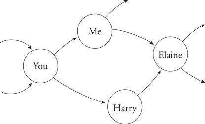
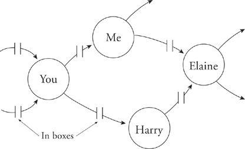

How We Work Together
Modern organizations are huge networks of interconnected work. The nodes of this network are you and your coworkers. The connections are pieces of work in progress that get passed from one person to another.

As a practical matter it is impossible to keep everyone in the organization 100 percent busy unless we allow for some buffering at each employee’s desk. That means there is an inbox where work stacks up.

With enough buffer at each desk, the work flow can now be organized to keep everyone busy all the time.
A side effect of this optimally efficient scheme is that the net time for work to pass through the organization must necessarily increase. Think of it from the work’s point of view: The time it takes to move entirely through the network is increased by each pause it has to make in someone’s in-basket. If workers were available when the work arrived at their desks, there would be no wait and the total transit time would be reduced. But availability implies at least some inefficiency, and that’s what our efficiency program has drummed out of the organization.
Making efficient use of workers in the sense of removing all slack from their day has an attendant cost in responsiveness and results directly in slowing the organization down. This is not an entirely happy tradeoff. As Bill Gates testified in the early proceedings of the Microsoft trial, “In the past, only the fittest would survive. Today, only the fastest will survive.”
It’s possible to make an organization more efficient without making it better. That’s what happens when you drive out slack. It’s also possible to make an organization a little less efficient and improve it enormously. In order to do that, you need to reintroduce enough slack to allow the organization to breathe, to reinvent itself, and to make necessary change.